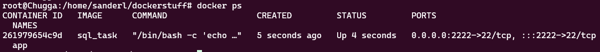
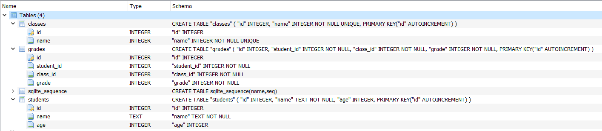

Set-Up
Creating the environment
All tasks (task 1, task 2) will be inside Docker container, so the first mini-task is to build and run the docker image.
The necessary Dockerfile is provided in the root directory.
If everything went well, you should be able to see the following with docker ps command:

Note: This docker image exposes port 22 for SSH connection, make sure to make it available (publish) outside of the container as well on port 2222.
Project layout (Docker image)
/opt/local/apps/
sql.jar # Application to query the DB. (Ver 1.0, broken)
database.db # SQLite DB file.
/opt/local/apps/lib/
sqlite-jdbc-3.45.1.0.jar # SQLite DB Driver
/opt/local/apps/versions
sql.jar.zst # Version of the working sql.jar (Ver 1.1)
/opt/local/logs
server.log.gz # Log file for task 2
Database structure
(Open image in new tab to see it full size) 